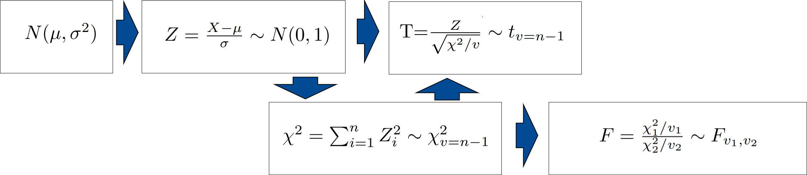

Después de estimar el modelo por el método de MCO y haber verificado el cumplimiento de los supuestos podemos realizar inferencias sobre los resultados obtenidos.
En este caso es posible que estemos ineresados en estimar el valor de la mendiente o el intercepto, pero además requerimos realizar pruebas de hipotesis sobre los valores estimados y sobre los valores pronosticados.
Intervalos de confianza sobre el intercepto (\(\beta_{0}\)) y sobre la pendiente (\(\beta_{1}\)).
Pruebas de hipótesis sobre los parámetros \(\beta_{0}\) y \(\beta_{1}\), con el fin de validar si los valores estimados a partir de la muestra son estadísticamente significativos (\(Ho: \beta_{i} =0\) vs \(Ha: \beta_{i} \neq 0\)).
Intervalos de confianza sobre la respuesta media para un determinado valor de la variable independiente (\(\widehat{y_{i}}\))
Estos resultados están basados en la distribución normal de los errores, la existencia de homoscedasticidad (varianza constante de los errores) , la no correlación de errores (independencia de errores) y la no existencia de multicolinealidad (relación fuerte entre las variables independientes)
Se parte de una variable condistribución normal \(X\), con media \(\mu\) y varianza \(\sigma^2\). Esta variable se puede estandarizar, restandole su media y dividiendola por su desviación estandar, transformandola en otra variable denominada \(Z\). A esta variable se le denomina normal estandar dado que tiene media cero y varianza uno.
La suma de \(n\) variables normales estandar, cada una de ellas elevadas al cuadrado, originan una variable \(\chi^2\) (chi-cuadrado).
La razón de una variable normal estandar con la raiz cuadrada de una variable chi-cuadrado sobre sus grados de libertad, da origen a un variable T con distribución t-Student.
Por último la razón de dos variables chi-cuadrado, origina una variable F con distribución F-Fisher
A este grupo de distribuciones se les denomina distribuciones de probabilidad muestrales